24/11, à noite, gerado enquanto você estava fora. Todos os clipes da lista, a partir das poses aprovadas (de lado = E-7-1, de frente = frente-v3, de quatro = quatro-2, pendurada = teto-1 e teto-2), no PixMiniMax, com 16 quadros e duas candidatas por pedido. Custo: ~128 gerações (saldo ~2.210 até 04/12).
Como ler os GIFs: cada painel é desenhado como o MOTOR desenha. HOJE é o clipe que está no jogo, no fator e no tempo dele (Predador.ts). NOVA é a candidata, em 105 px de altura, com os pés no mesmo chão e o mesmo tempo total. Não marquei nenhuma como boa: os textos dizem o que se vê e os defeitos. A escolha é sua.
Pendurada, ela ocupa a arena até o chão (decidido em 24/11: "não tem problema").
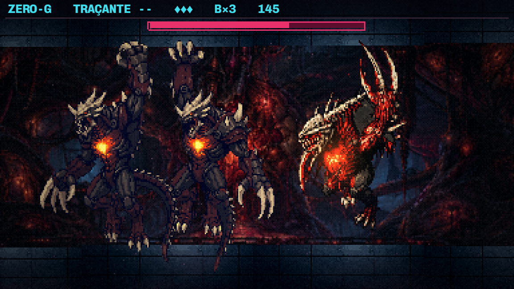
São dois clipes, um da teto-1 para a teto-2 e outro de volta. Em cada um, a mão livre crava no teto e a outra solta. Para ela avançar de verdade, o último quadro de cada clipe está deslocado para a esquerda (48 px no primeiro e 64 px no segundo), então o corpo anda dentro do clipe e a garra que segura não se mexe. Na emenda, o motor só reposiciona o sprite, sem salto. Medi a garra em todos os quadros: a que segura fica no mesmo pixel do teto até soltar, nas quatro candidatas. Na passagem há uns 2 quadros com as duas mãos cravadas.
Em cima, hoje: o balanço, com o corpo deslizando pelo código. Embaixo, a nova: dois ciclos, com o clipe a 50 ms por quadro.
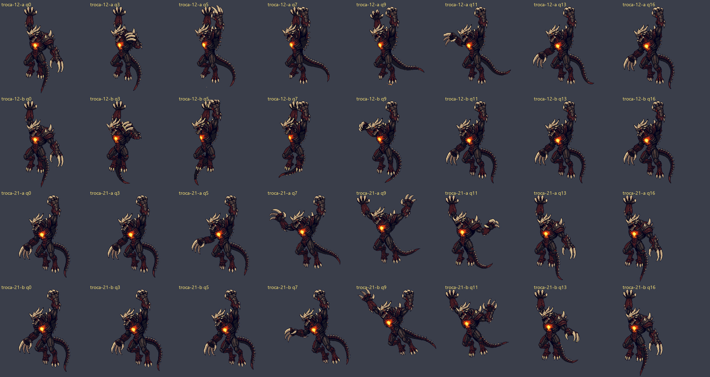
Uma lava por pose, cada uma com a mão que está solta. Em cada GIF: hoje, a lava da teto-1 e a da teto-2.
| Rodada | O que saiu |
|---|---|
| a, b (1ª) | Em três das quatro, o corpo inteiro acende em laranja no meio do gesto (lava-1-b, lava-2-a, lava-2-b). A lava-1-a fica escura: colhe a bola no core, arremessa e volta. |
| c, d (2ª, pedindo o corpo escuro) | As quatro mantêm o corpo escuro. A garra vai ao core, tira a bola, arremessa para a esquerda e volta. A lava-1-c e as lava-2 pintam um rastro de fogo depois da soltura, e a lava-1-d deixa a bola pintada cair sozinha. |
Em todas, a bola pintada tem de sair do clipe no quadro da soltura, porque quem lança a bola é o motor. É o mesmo corte que a lava de hoje já tem.


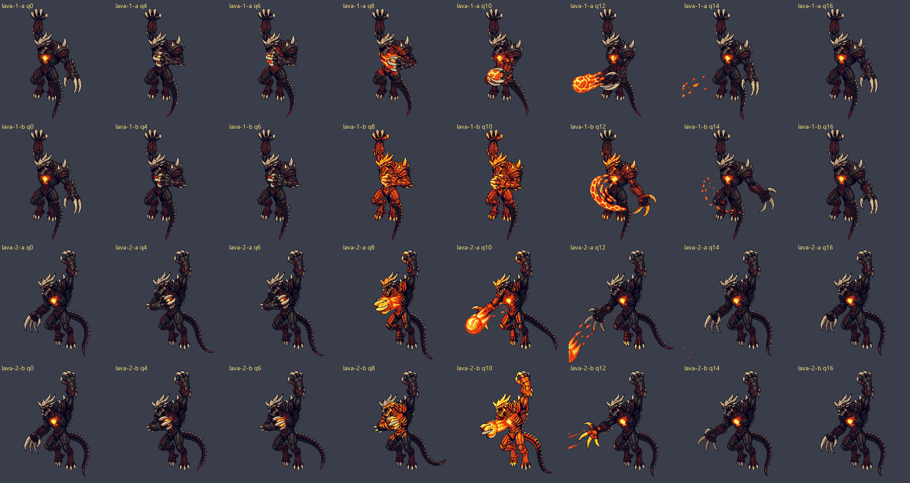
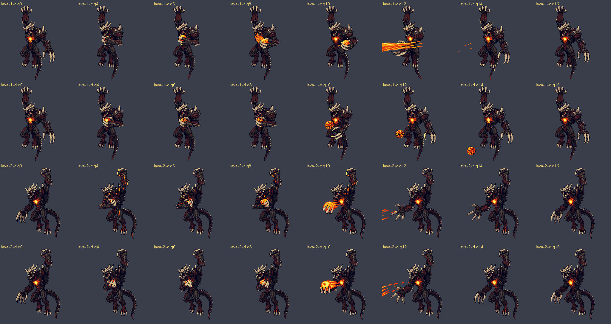
É a transição da teto-1, feita no passo 2. De trás para a frente, ela solta o teto. No jogo, o código leva o corpo do chão ao teto durante o clipe, como faz hoje com a agarra.

É a transição da frente-v3, feita no passo 2. De trás para a frente, ela é a volta para a pose de luta, que hoje é o giro.


| urro-a (limpo: sem q6–8) | Joga a cabeça para trás, com a boca aberta e os braços abertos. Mesmo depois do corte, sobram fagulhas pintadas em volta por alguns quadros. |
| urro-b | O corpo inteiro fica laranja no meio do gesto. |
| urro2-a (limpo: sem q13–14) | Boca aberta para cima, braços abertos e o corpo escuro o tempo todo. O urro segura por vários quadros antes de voltar. |
| urro2-b (limpo: sem q10–11) | O mesmo gesto, mais curto. |
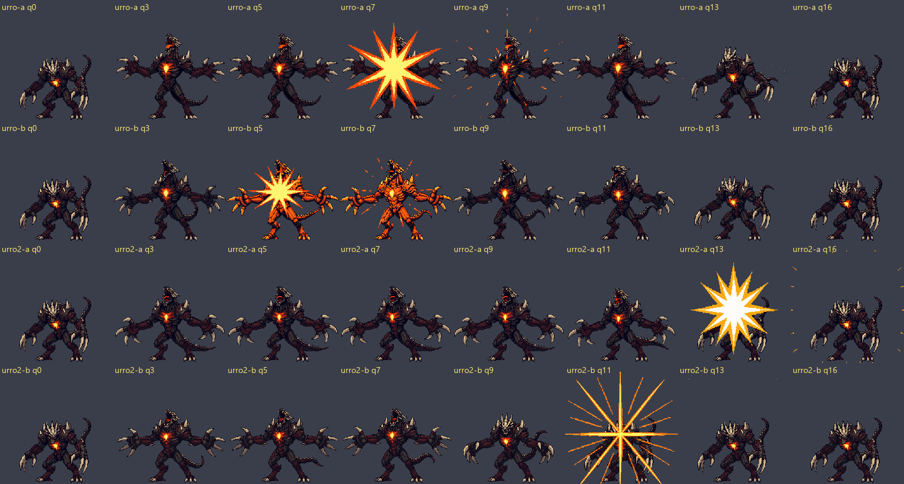
Ela se agacha, salta com as pernas recolhidas e os braços erguidos, pousa agachada e volta à pose. A distância do salto fica com o código, como hoje.

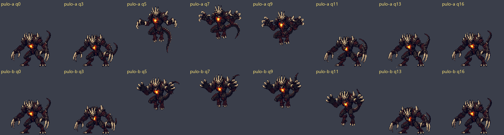
Ainda não existe no jogo, então o painel de hoje mostra o urro, o gesto de frente mais parecido.

| sede-abre-a, -b (1ª) | Corpo laranja e clarões. |
| sede-abre2-a, -b (2ª) | Clarões em estrela maiores ainda. |
| sede-abre3-a, -b (3ª) | Limpas. Abre os braços, arqueia, as placas do peito se abrem como costelas e mostram o core, segura aberta e fecha. O corpo fica escuro e nada é pintado no ar. |
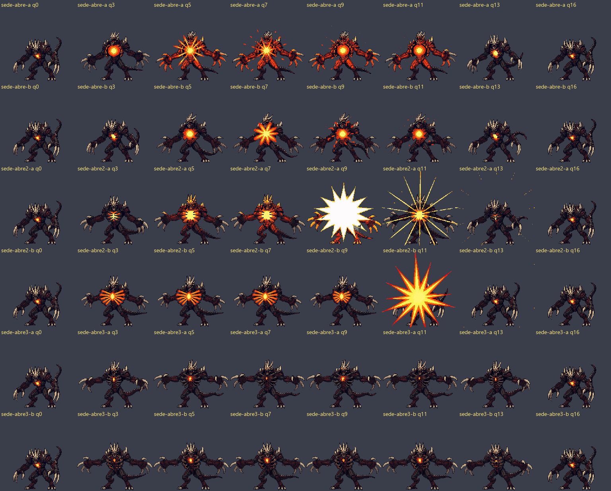

| sede-devolve-a, -b, 2-a, 2-b | Explosões pintadas que cobrem o corpo. |
| sede-devolve3-a | Limpa. Ela se curva, dá um tranco para cima com os braços para trás e as costelas abertas, depois se curva e fecha. |
| sede-devolve3-b | O mesmo tranco, com o core e as costelas mais acesos no meio. |
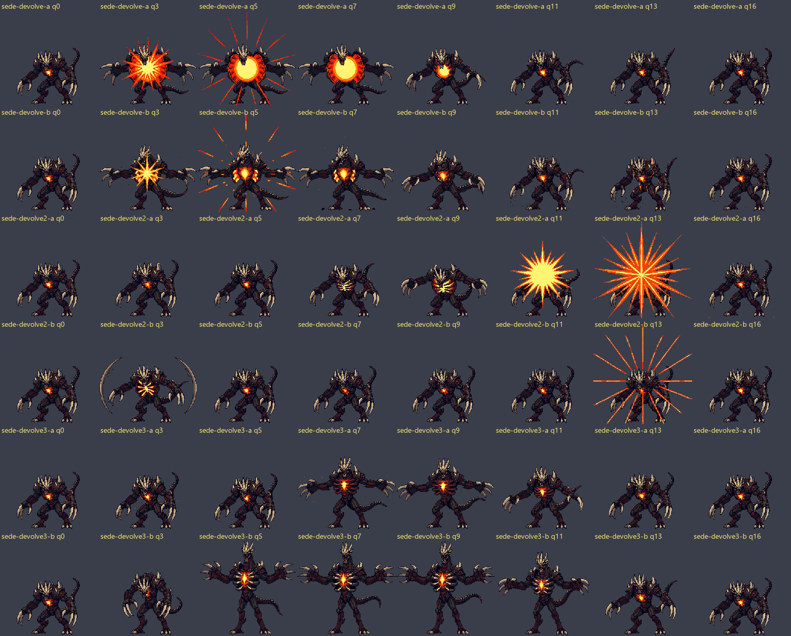

| coracao-a (limpo: sem q13) | Crava as garras das duas mãos no core e aperta. O core apaga quase todo, ela solta e ele volta. No q13 havia uma mancha clara em volta do corpo. |
| coracao-b | O mesmo, sem mancha nenhuma. |
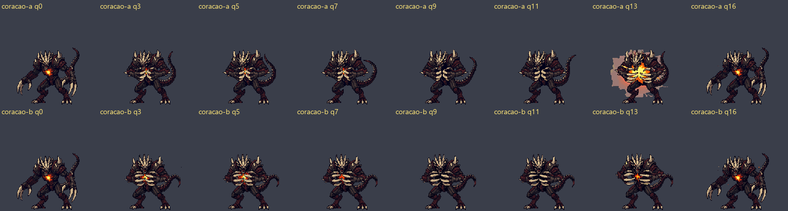
É um ciclo. O laço foi achado dentro do clipe com o _achar-loop, como nos de setembro.

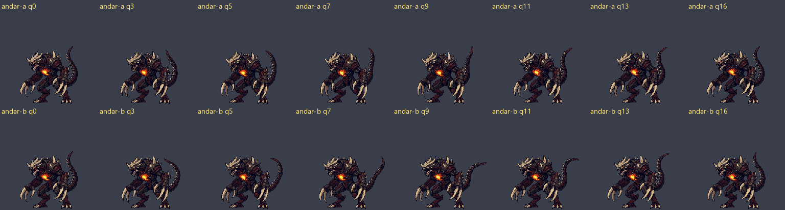

| golpe-a, -b, 2-a, 2-b | Arcos de foice enormes pintados em 2 a 7 quadros. O braço sobe bem, mas o arco cobre o gesto. |
| golpe3-a (limpo: sem q5–6) | Ergue o braço bem alto e desce duas vezes até o chão. Depois do corte, sobram umas fagulhas no q7. |
| golpe3-b | O mesmo gesto, com um risco vermelho fino no q5. |
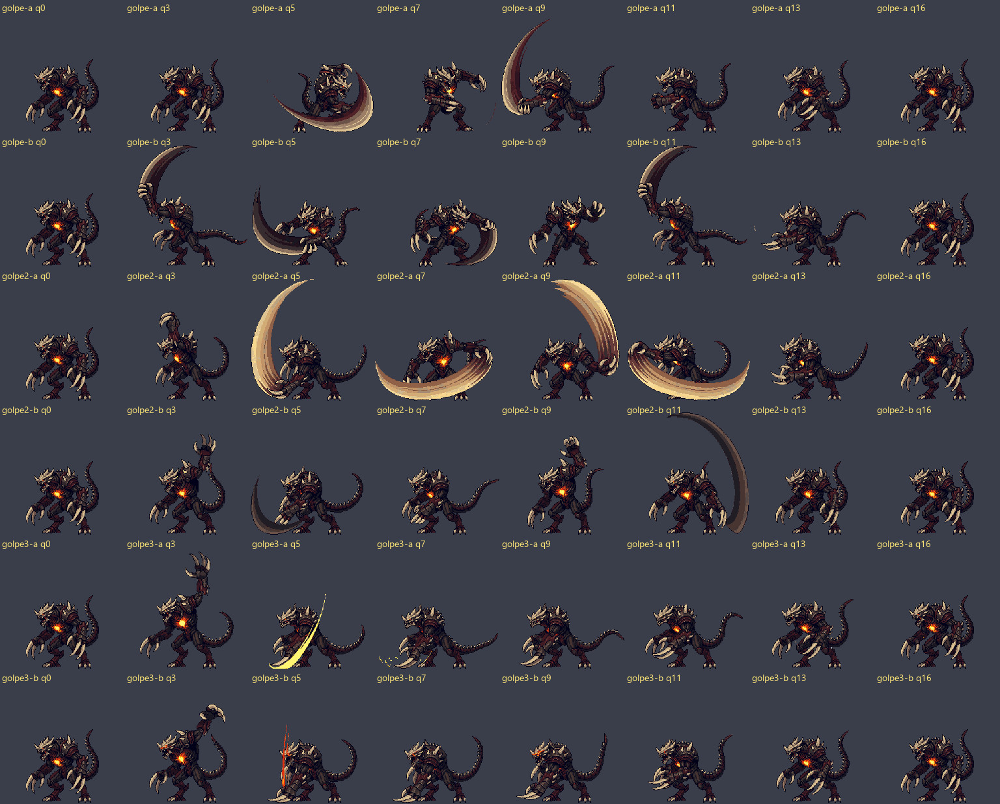

| rasgo-a, -b, 2-a, 2-b | Pintam uma coluna de luz ou de fogo saindo do chão, que é justamente o que o motor lança. |
| rasgo3-a | Limpo. Agacha, crava as garras no chão e sobe puxando o braço até acima da cabeça, depois volta. |
| rasgo3-b (limpo: sem q6) | O mesmo, com gotas de lava pintadas nas garras no q5 e no q7. |
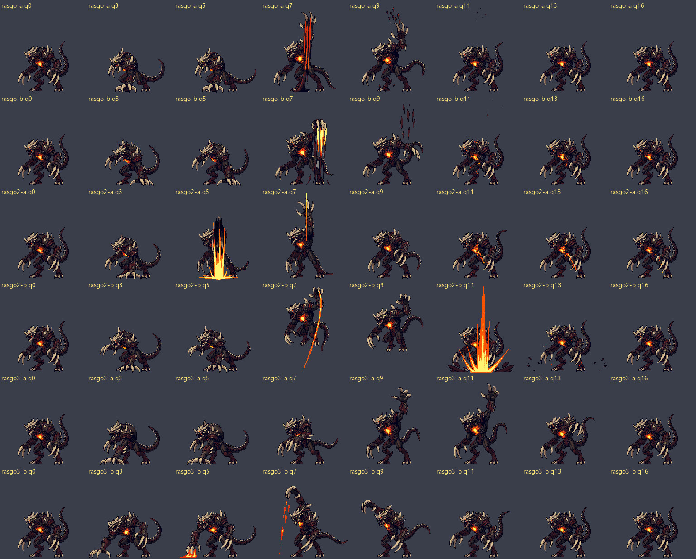

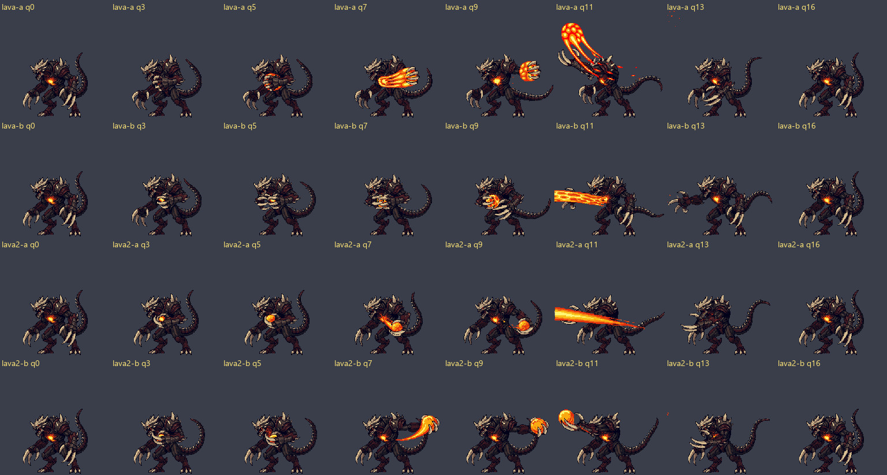
Hoje ela fica parada e o código a desliza. Nas duas candidatas, ela se agacha, salta para trás com as pernas recolhidas, pousa e volta à pose. A distância fica com o código.

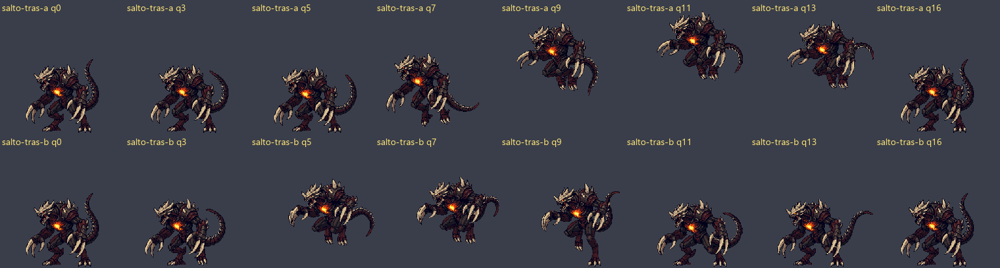
É a transição da quatro-2, feita no passo 2: uma vez no tempo de hoje (380 ms) e outra no dobro.


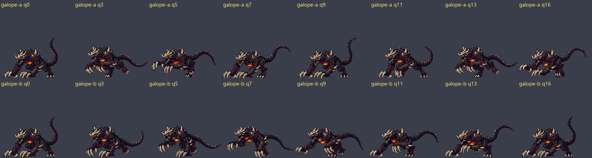
A escalada é o rastejar girado 90° fora do jogo, como a spec previu.

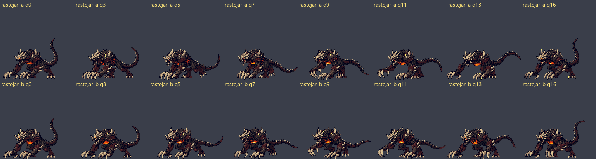
Ela se lança com o corpo esticado e reto, os dois braços à frente e as garras abertas, e volta a ficar de quatro. O voo de borda a borda fica com o código.

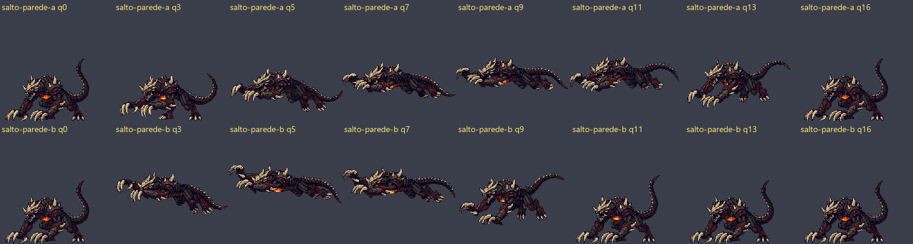
A pose na parede é a quatro-2 girada 90° em pixel, que é exato: a cabeça para cima e as garras na parede da esquerda. A parede da direita é o espelho.
Do chão para a parede: ela chega à parede, sobe as garras da frente e puxa o corpo até ficar agarrada de pé.

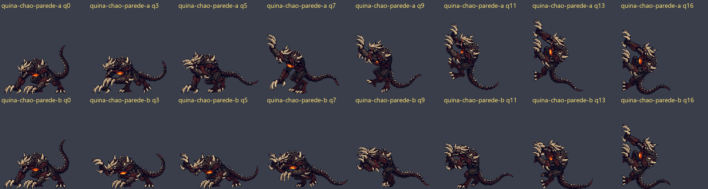
Da parede para o teto: agarrada no alto da parede, ela estica um braço para o teto, crava e se pendura na teto-1. Na -b, ela chega pendurada muito cedo (já no q5) e fica parada no resto.

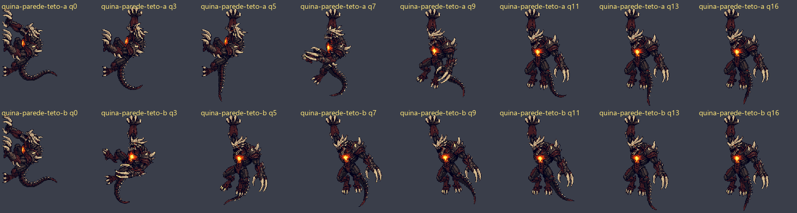
Agarrada embaixo na parede, ela torce o tronco para dentro da sala e varre com o braço livre. O painel de hoje mostra o slash, o mais parecido.

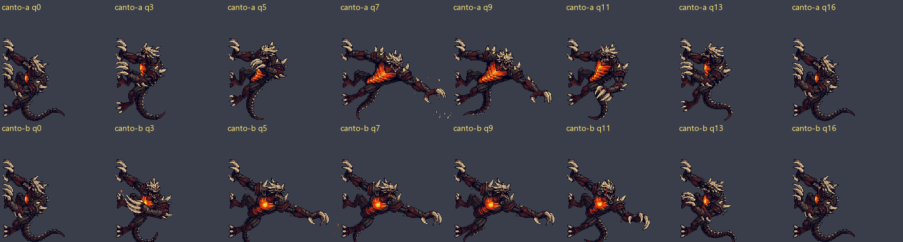
Ferramentas: ferramentas/teto-clipes.mjs e passo3-clipes.mjs (as gerações, com os pedidos de cada rodada comentados), comparar_teto.py e comparar_p3.py (os GIFs lado a lado como o motor desenha), garras_teto.py (a garra no teto por quadro), clarao.py (os quadros com clarão pintado), ampliar.py (os quadros em 256²). Os quadros crus ficam em cru/teto/ e cru/p3/.